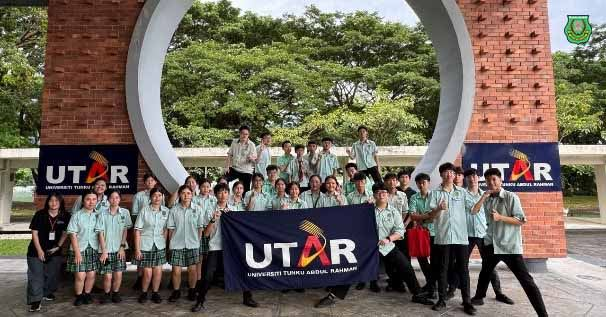
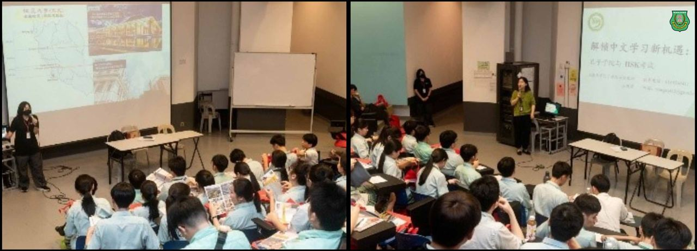
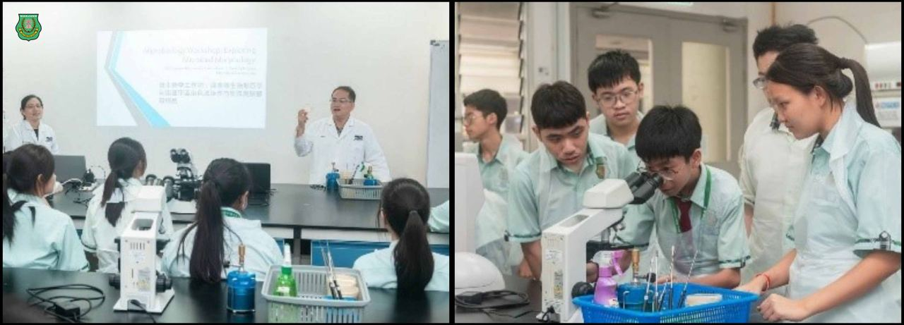
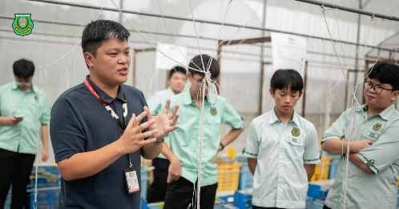
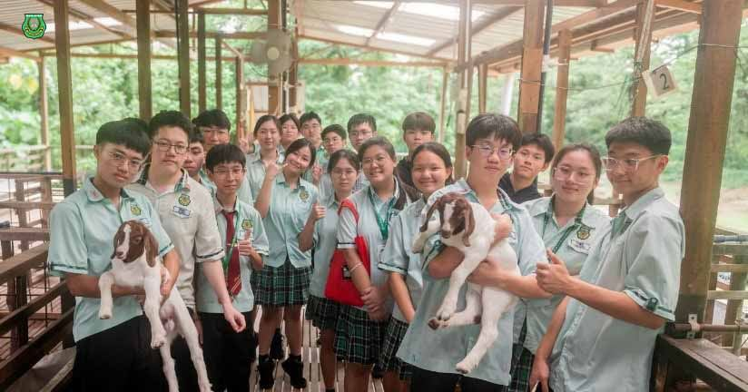
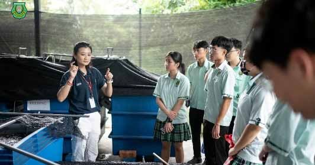

南华独中师生走进UTAR校园
南华独中师生走进UTAR校园
探索STEM教育魅力
为了加强学生对科学与工程领域的认识，并及早启发对未来升学方向的思考，本校师生一行近日前往马来西亚拉曼大学（UTAR）甘榜峇鲁校区，参与由UTAR孔子学院主办、推广与公共关系部（DPP）协办的“STEM探索与大学体验之旅”活动。
本次活动为UTAR STEAM Outreach计划的一部分，旨在鼓励中学生积极接触科学（Science）、技术（Technology）、工程（Engineering）、艺术（Arts）与数学（Mathematics）等跨领域知识，同时感受大学校园氛围。我校参与的学生均为理科班成员，对科学与工程相关科系具浓厚兴趣。
活动伊始，UTAR推广与公共关系部助理经理蔡女士为学生们带来精彩的校园简介，详细介绍了拉曼大学的发展历程、教学资源、学术课程及国际交流项目等内容，让学生对大学的学习与生活有了初步的认知与向往。
随后，我校师生在孔子学院接待人员的引领下参观校区，实地走访了各项设施，包括实验室、图书馆、多功能讲堂等。学生们对UTAR先进的学习设备与开放的学术环境表示赞叹，部分学生也积极提问，展现浓厚学习兴趣。
校长陈丽冰博士表示“本校长不但在校本课程中落实了STEAM相关课程，此次活动更是带领学生走出校园，拓展学生视野，更帮助他们认识STEAM领域的广阔发展空间。通过与大学教师及在校生的交流，也激发了他们对未来升学的憧憬，让学生时刻谨记人外有人，天外有天，勉励自己勇于踏步向前。”
*照片由UTAR提供





